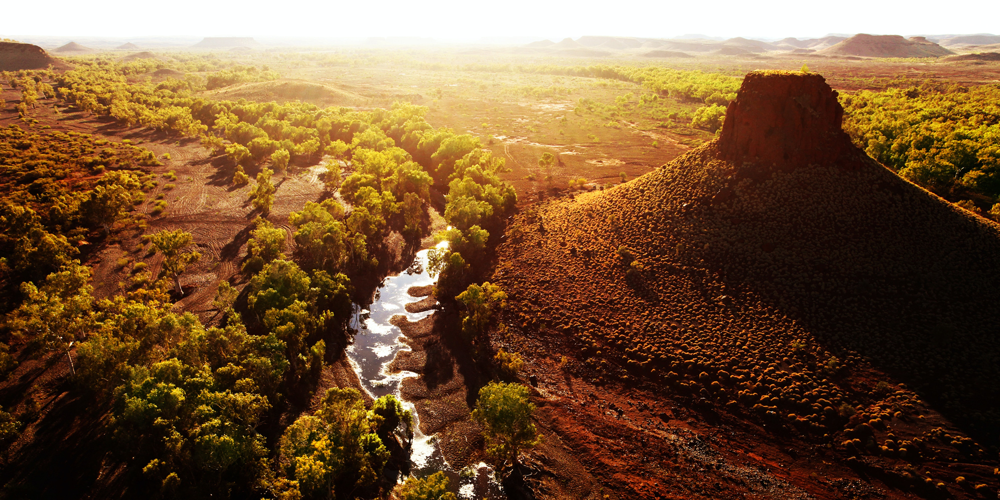

"An epic and ancient landscape, deeply entwined with the artistic, musical,
and spiritual traditions of Indigenous Australians, the Outback is one of the largest remaining,
intact natural areas on Earth. A cultural, ecological, and geological wonder,
I explore and capture these vibrant regions on foot and from the air."

Above: Pannawonica Hill, near the small town of Pannawonica,
a tiny iron-ore mining settlement in the Pilbara region of Western Australia.
Known for its Aboriginal peoples and its vast, ancient landscapes,
the Outback is an incredibly special place for me.
I think that once you get that distinctive red dust in your blood it never comes out.
"Drawn to remote, wide open spaces, to the dusty and the desolate,
I have found that there are countless unique rocky outcrops and ridges to explore.
From the arid and ancient regions of Kimberly and Pilbara in Western Australia, to the rugged,
weathered peaks and dramatic rocky gorges found in the Flinders Ranges of South Australia,
to the red centre and Australia’s most famous monolith,
Uluru — it is not only the sheer size of the Outback that is astounding
(it could encompass almost all of Europe), it is also home to some of the world’s most spectacular
and untouched landscapes. Over the past few years, I’ve been lucky enough to photograph, film,
and fly over these regions — both in light aircraft, and more recently, with drones."